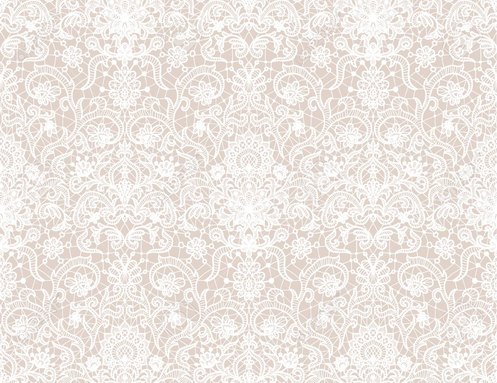
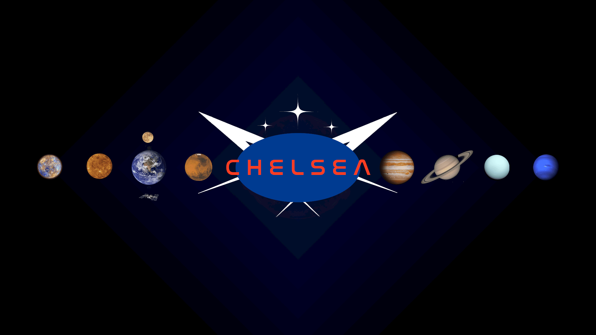
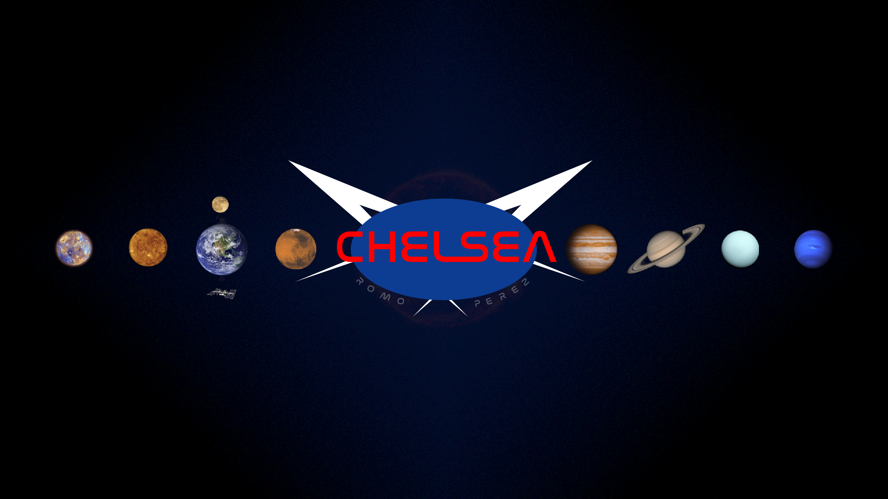
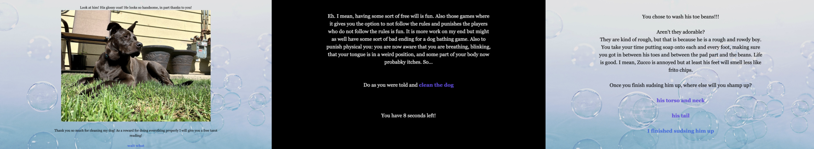

Chelsea Romo
Hello, my name is Chelsea Romo and you are on my first webpage! Sorry if this is bad, every time I try to work with coding I want to cry. I apparently graduated from child to adult at UIC studying History and Theatre Design, Production, and Technology. This is a website for my IDEA 120 class. Right now my CSS Stylesheet does not really want to work with me so here I am.
Project 1: Header

This is the first thing I worked on for IDEA 120. It was originally supposed to be a header, but this coding thing is too hard for me to figure that out. I went with the theme of space as I wanted to be an astronaut but I am too short and too sad to join as so I am just making space themed stuff.
Project 2: Fonts

For this project, we had to alter the fonts of our headers. However, I really liked my header font, so I just added my last name around the blue circle and connected the L and the S. The reason I removed the stars is just because I wanted to clean up the logo and the stars were too hard to make.
Project 3: Twine Game

This is my take of the video game project that we had for this class. I wanted to make a dating sim originally but I realized that is too much work for a first game and so I made a simulator of bathing my dog, Zucco.